Case Study
Building Community Bonds Through Public Schools
Solo Project
Duration - 1 Month
A communication app for school teachers and parents, helping foster stronger community bonds through parent involvement, leading to a better educational experience for children.
Project Overview
Problem
Stronger communication builds stronger community bonds. Additionally parent involvement in early children's education is a big key to the child's educational success.
However there isn't one product that does everything well for parent/teacher communication for instance some are better with visual communication, some better with text
Challenge
Build a streamlined app that focuses on giving users what they need, without the pitfalls of other products.
Parameters
- Created native IOS application
Deliverables
- Competitive analysis & market research
- User surveys & analysis
- Organization of user personas & stories
- Creation of user experiences, flows & interfaces
- Creation of lo & high fidelity wireframes
- Branding & logo creation
- User prototype testing
Tools Used
- Sketch
- Google suite
- Draw.IO
- Invision
Market Research
What are people currently using and are they satisfied?
Shutterfly Sites
The Good
- Big market share, with tech support
- Great when you need pictures
- App And Website Access
The Bad
- Messages don't always make it to user, or are cut off before the end
Class Dojo
The Good
- Solid brand based in science
- Widely used and can pair with home use
- Great for text based messages
The Bad
- To pair with use at home isn't free
- Isn't great if you need more than a text based message sent
Regular E-mail
The Good
- Existing product most people use
- Can send wide range of files, size permitting
- Consistent message delivery
The Bad
- Nothing special or unique to market
Conclusions
Shutterfly has the widest usage of individual applications, followed by Class Dojo, then Email. Shutterfly is best for pictures and weak on text, where Class Dojo excels mainly with text.
E-mail is incredibly versatile, but the fact that everyone has one yet additionally uses something else for school, speaks to the desire for an arena specific product.
user research
What functions did those surveyed care about the most?
Believe a strong communication application can be a part of building a stronger community.
Are IOS users
Information about classroom activities
Communicate directly with the teacher
Upload/receive/track my child's homework
Conclusions
Many people surveyed consider themselves very involved in their children's education, and believe a strong community around the school benefits everyone. They also desire detailed information about what is happening in the classroom, and are more often IOS users.
user personas
Research Based Personas
Andrea
Stay at home mom, very involved in school
Desires
- Have all information she needs in one place
- Ability to sign up for class events online
- Track Homework
- Upload pictures, particularly of children's artwork
- Communicate directly with teachers
Frustrations
- With everything going on in their lives, too much information can feel overwhelming
- Ideally don't want messages more than once a week
Meline
Volunteer teacher, believes in community
Desires
- Continue to use communication to build up the school community
- Ability to follow what's happening in the classroom
- Native App (IOS) with info in one place
- Ability to toggle notifications on/off
Frustrations
- Doesn't want to get overwhelmed with messages throughout the week
Rochelle
Working mom who relies on app to get information
Desires
- Track Homework
- Simplified Interface
- Communicate with Teachers and other Parents
- Pay for class field trips/events
- Receive messages via e-mail
Frustrations
- Short on time, so make clear important information
- If it's not in the app, I don't know what's going on
For a deeper dive, a list of User Stories detailing the desired features from most to least important, was built from the surveys and user personas.
user flows
What might the user path look like?
Individual actions were created first, then built towards a complete look of all actions combined in a unified view at the user experience
Sign Up
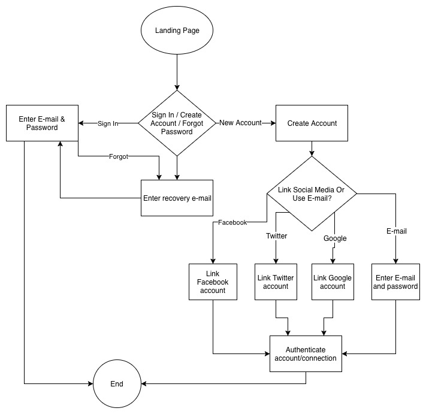Messages
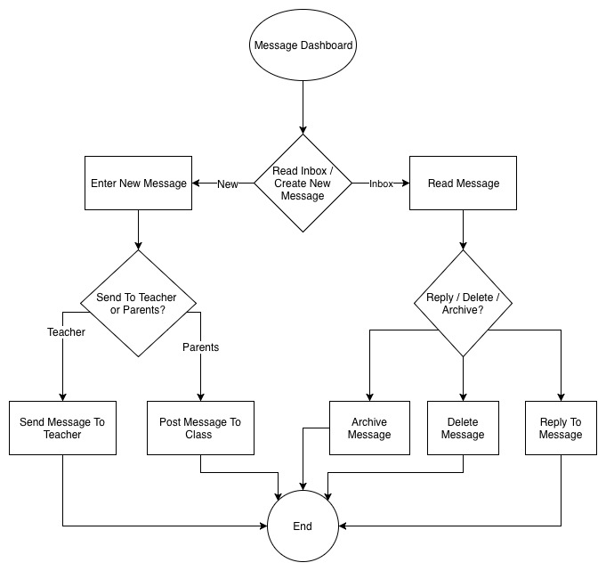Calendar
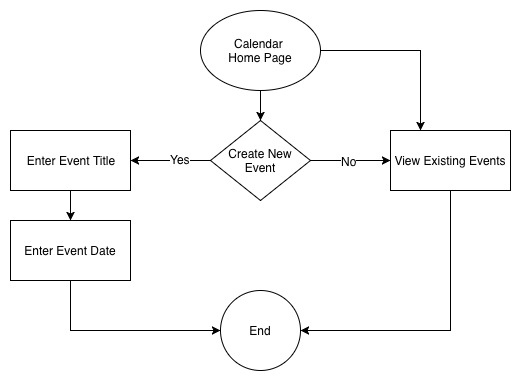Full Process
A master outline view of the app was created to see how it would look from beginning to end
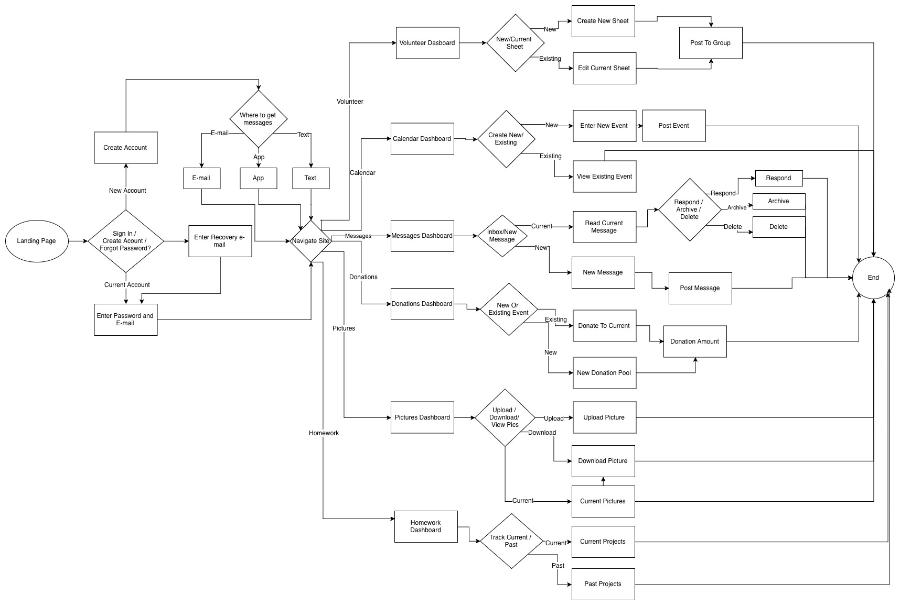For a deeper dive into the full list of user flows, we've included the below link.
lo-fi wireframes
Once we new what processes were important to the users, wireframes were created to show the bones of how the pages could be constructed. The process started on paper, then progressed to a whiteboard, before ending with digital mock ups.
Account Dashboard
Hand Sketch

Whiteboard Sketch
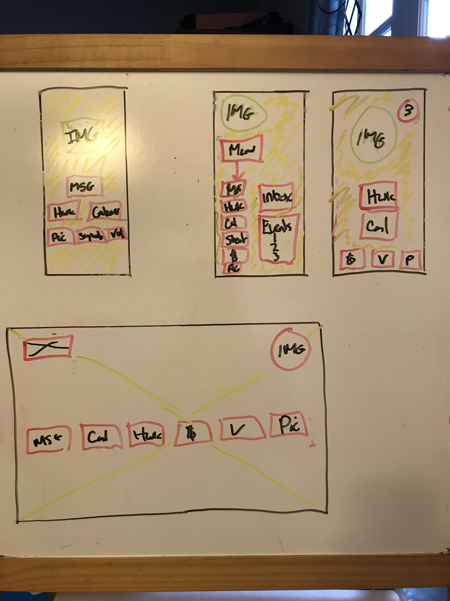Digital Mock
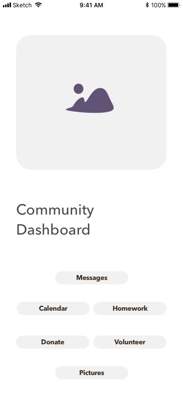Sign In
Hand Sketch
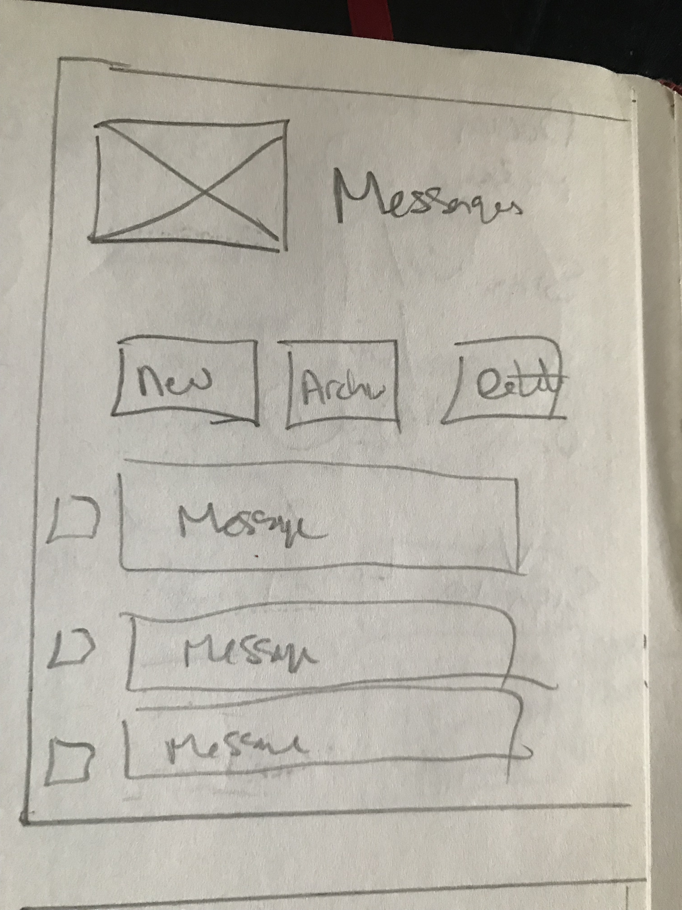Whiteboard Sketch
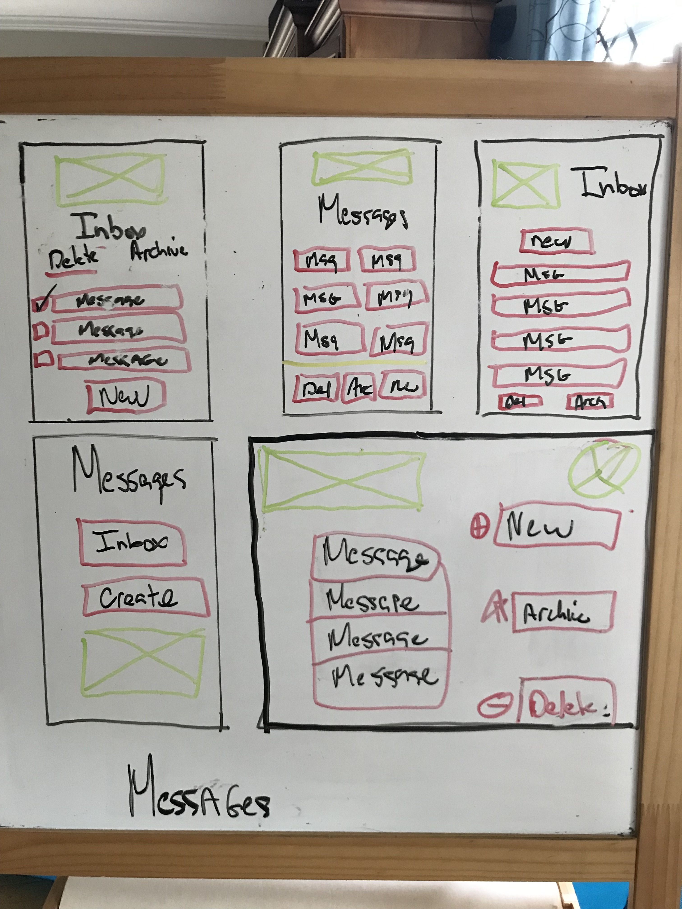Digital Mock
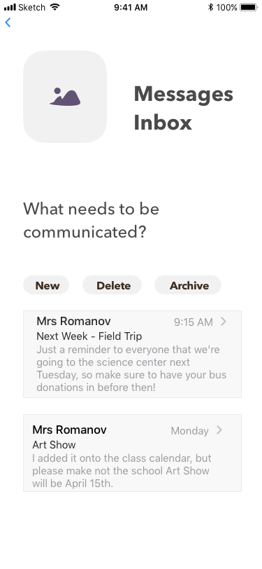For a deeper dive into the lo fidelity wireframes, we've included the below link.
branding
Before adding color and images, we needed to establish some branding separately so understand what colors or images to use. The idea was to evoke the idea of a comfortable educational environment, with colors remeniscent of the classroom environment, as well as quickly scannable fonts for parents on the go.
What's In A Name?
Because the thrust of the idea was to build a "Community" that was the original name of the project.
However as the process moved along the proverb "It takes a village to raise a child" arose, and the decision was made that "Village" made for a stronger anchor title for the brand.
Typography
Pulling from the surveys we learned many parents were either overwhelmed with the amount of messages, or were on the go and didn' have time to fight with unreadable text
Because of that we needed text that was simplified and readable, drawing their attention to important information.
After trying multiple options, PT Seriff became the header font, with Montsteratt pulling body copy duty.
Logos
Your first and lasting view of what this product is, should be directly tied to the logo.
During the logo process we pivoted from one name to another, so that changed what we might create.
Each attempt was tied to school, be that artwork, school busses or what was used in the classroom
Eventually we landed on using a pencil because it was remiscint of No.2 pencils that we all used in the classroom, and could also be used as a both a standalone logo, or fit within the name.
Landing Page Image
We needed something to stick in people's minds and allow them to easily understand what this product might be upon first glance.
Three versions of a landing page image were tested.
Preferred the image of the colored pencils
Colors
Like the logos, we wanted to evoke colors reminscent of the classroom experience.
Because of that we decided to lean on yellow and green because it builds off the logo, can be used to establish heirarchy with one another, and feels directly tied to school from busses to pencils
For a deeper dive into elements in the branding process, we've included the below link.
hi-fi wireframes
Putting skin on the bones
Now comes the time to take the lo-fidelity mock up pages, and add the branding process on top of those, to create the polished high-fidelity mock up pages.
To create a testable the MVP, a few processes that were more lightly requested (Sign Up Pages) were pulled back on to focus on the core and most requested processes (Sign Up, Communication).
Final Landing Page

Pencil images along with the Yellow and Green earth toneswere reminiscent of school, and provided a simple mission statement establishing what this product is.
Final Calendar Page
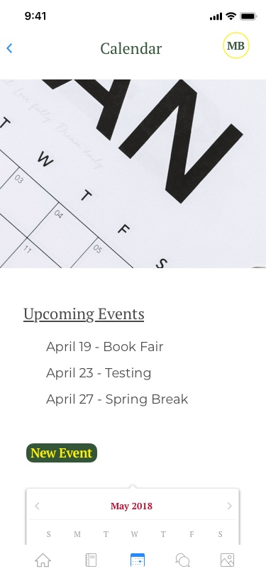Calendar page allows for a quick view of important upcoming events, to see future events, as well as add new events
Final Homework Page
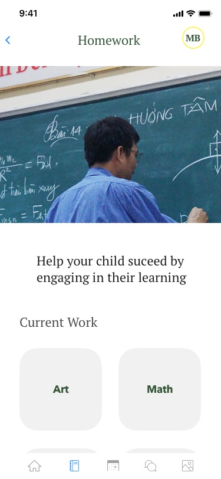Current projects broken down by subject allow for parents to easily browse through categorized folders for each subject
Brand Introduction
As an added bonus we created pages with a "mini pitch deck" of pages that lie after the landing, which could walk the user through how it's use might be potentially important to their children's education
Full Dashboard Cycle - From Sketch To Hi-Fi
hi-fidelity testing
Invision Testing
Two rounds of user testing in Invision was done to see what was working or not working for people, and then iron out any issues. The user flows were understood, but there were other things that needed refinement.
<3 class="village-testing-sub-section-headers">Color RefinementThe colors were initially a more diverse swath of colors, occasionally action based to grab attention, but were further refined for simplicity, subtlety and brand alignment, creating the dominate pallate of Green and Yellow.
Red headers or buttons with a red background, became green.
Folder labels went from light blue, to the primary forrest green.
About Pages
The mini pitch deck pages felt a bit text heavy for readers, and inconsistent with the use of images and background color.
Images were added to the top of all pages for consistency.
Text blocks felt a bit heavy on the eyes, so they were broken up to ease reader strain, which also allowed for a bit of branding via image.
While it's use was consistent, users didn't like an occasional light yellow background, so it was removed.
conclusions
This was something I was passionate about upon embarking on this discovery and creation. Talking to fellow parents opened my eyes to what they might want to see from this app, as things like being able to track homework wasn’t a process I would have thought of.
Also being able to bounce ideas off my wife (potential user) was ever so helpful as she helped the name tweak as well as the logo idea.
What worked?
- Final Branding (photos/colors etc)
- The process - users understood navigation
What didn't work?
- Initial Color Palatte needed slimming down and refinment
- Intial name felt stale and generic
- Early logos weren't scaling right
- About pages worked better in desktop but jarring in mobile
If I had more time....
I would build out more screens, adding different processes to sign up for events, or donate to them from the app.
Refine the images a bit more, possibly using them as a background instead of just at the top of the page.
Visual refinement, can always be better, as can being a bit more inventive with how you can reinvent navigation around a site while still seeming natural
Doubts going into the project?
I wasn’t sure how wide the market was, or if there was a specific enough niche for this to make a difference.
What surprised me?
How many people use e-mail for these functions, as well as how many of the other apps don’t do all of the same things, and how people like getting their messages directly in the app.
What I Learned?
The notion of how an IOS App really wants users to take a walk through the process while signing up. While I understand that, I think users also want to just get into the app and go.
Also, how hard it is to scale things in a logo, even when you strip it down to just boxes and lines
How I'll Use That Later On...
I’ll find a more stripped down way to introduce a product in those pre-sign up pages, maybe adding in a way to skip through it.
For logo refinement I’ll simplify instead of a wider range of colors.
Thought I'd created a nice pencil logo only to realize it didn't scale right becuase it had too many moving parts, and moving things that might move within the visual helped fix that problem.